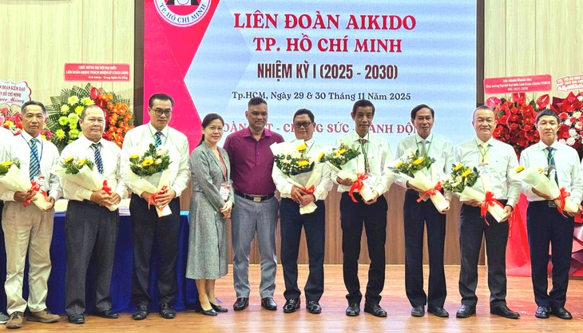

Sáng 30-11, Đại hội đại biểu Liên đoàn Aikido TP.HCM nhiệm kỳ I (2025-2030) diễn ra sau sáp nhập địa giới hành chính và hợp nhất các hội quần chúng.
Theo báo cáo tổng kết, số lượng CLB và sân tập Aikido tại TP.HCM (mới) trên 60, cùng gần 3.500 người tập luyện thường xuyên.
Hằng năm, liên đoàn có tổ chức Seminar tập huấn với các võ sư cao cấp của Tổng đàn Aikido thế giới, nhằm tiếp cận những kỹ thuật cao về aikido, được học viên tích cực tham dự.
Ngoài ra liên đoàn còn tổ chức Liên hoan võ thuật Aikido mở rộng lần I-2024 tại TP.HCM với sự tham gia biểu diễn của hơn 200 vận động viên của các CLB, sân tập thuộc liên đoàn và aikido các tỉnh, thành bạn.
Đồng thời tham gia biểu diễn tại Liên hoan võ thuật Quốc tế 2023 - 2024 cùng nhiều hoạt động khác.

Ban chấp hành Liên đoàn Aikido TP.HCM nhiệm kỳ I (2025-2030) ra mắt